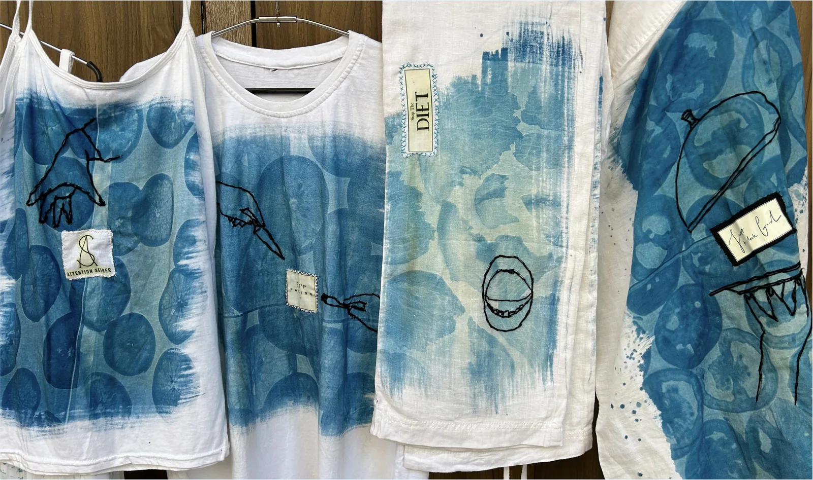
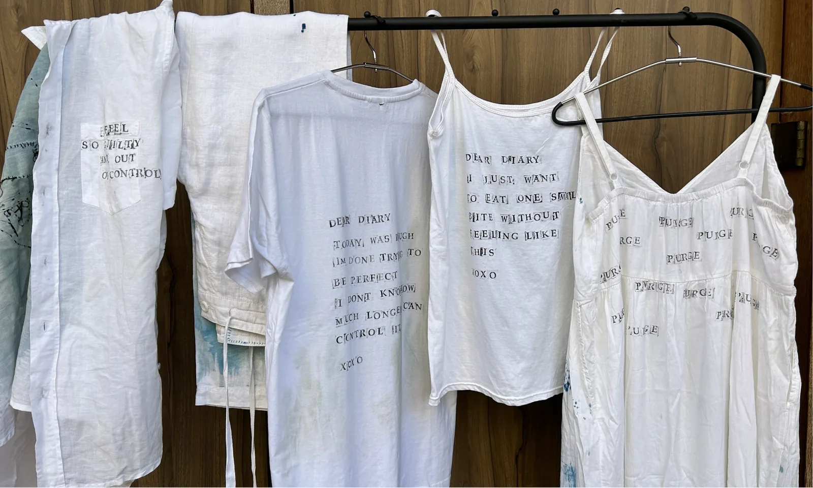
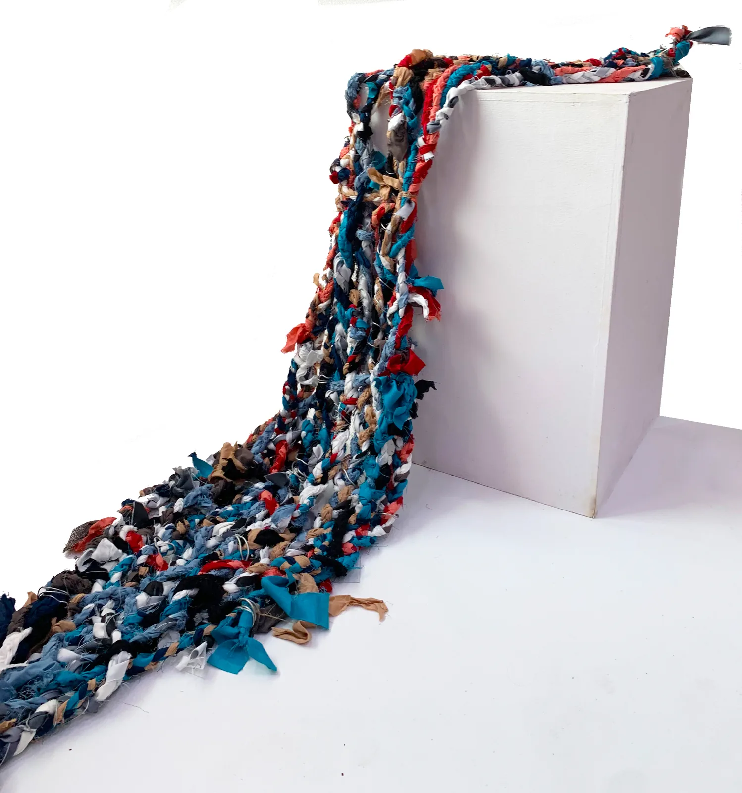

Installation
Three installations about food, shame and the things you carry — painted, printed and braided.
This piece is about the relationship between food and how we are taught to think about it. The food pyramid gets reconstructed in our heads as we grow up, and health takes a back seat to what is expected of us. I painted that shift onto wooden blocks in the colours and format of a children’s toy, because that is often where it starts — bright, familiar, and a little unsettling up close.
My relationship with food has been an emotional one, and growing up I was taught to keep that quiet. This work pushes back. Using cyanotype I printed food directly onto garments — touching it, working with it — and hand-stitched labels that read like fashion tags but carry the phrases people hear when they are battling issues with food. Clothes on a rack, displayed without apology.


Textiles from different parts of my life, braided and knotted together. Every memory, experience and turning point is literally tied in, and the wire and knots mark the moments where things changed. The colours reference other works in my practice, each carrying its own story. It keeps extending, because the story is not finished — a non-representational version of me, in progress.

Installed
Airing out your Dirty Laundry, shown on a garment rack at exhibition scale.
Credits — Cyanotype, textile, acrylic and mixed media. Concept, making and documentation: Tanaya Agarwal.